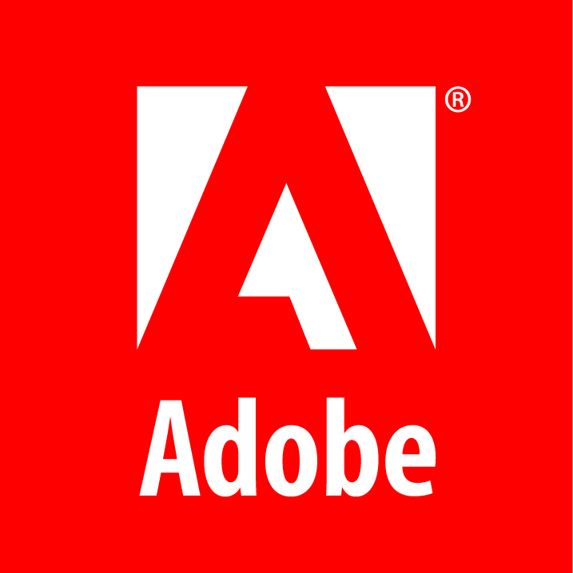

Uitility Tools
Keep in mind that we are uploading only utilities essential for your Desktop Computer
No Malwares. Download safely.
Downloads
Operating Systems

Windows 10 PRO
Download dialog
× Windows 10 PRO(x86/x64)
Version: Pro
Requirements:
Processor: 1 gigahertz (GHz) or faster processor or SoC.
RAM: 1 gigabyte (GB) for 32-bit or 2 GB for 64-bit.
Hard disk space: 16 GB for 32-bit OS 20 GB for 64-bit OS.
OS family: Microsoft Windows
About Windows 10
Windows 10 is a series of personal computer operating systems produced by Microsoft as part of its Windows NT family of operating systems. It is the successor to Windows 8.1, and was released to manufacturing on July 15, 2015, and broadly released for retail sale on July 29, 2015
> With Windows 10 Pro, you've got a great business partner. It has all the features of Windows 10 Home, plus important business functionality for encryption, remote log-in, creating virtual machines, and more. Get fast start-ups, a familiar yet expanded Start menu, and great new ways to get stuff done, plus innovative features like an all-new browser built for online action and Cortana, the more personal digital assistant.
> Windows 10 combines the Windows you already know and adds great improvements you'll love. Technologies like InstantGo(1) let you boot up and resume quickly. And Windows 10 has more built-in security features than ever to help protect against malicious software.
Begin downloading
Windows 10 PRO x86/x64 ISO:
File size: 5.55GB
Terms of Service

Windows 8.1 Pro
Download
Download dialog
× Windows 8.1 PRO VL(x86/x64)
Version: Pro
Requirements:
Processor: 1 gigahertz (GHz) or faster processor or SoC.
RAM: 1 gigabyte (GB) for 32-bit or 2 GB for 64-bit.
Hard disk space: 16 GB for 32-bit OS 20 GB for 64-bit OS.
OS family: Microsoft Windows
About Windows 8.1
Windows 8.1 is a personal computer operating system that was produced by Microsoft and released as part of the Windows NT family of operating systems. It was released to manufacturing on August 27, 2013, and reached general availability on October 17, 2013, about a year after the retail release of its predecessor.
Windows 8.1 PRO
Get the Final Version of Microsoft Windows 8.1 Pro ISO Download. Free direct link by Softlay. Download ISO file without Media Creation Tool or Windows 8 Product key. Untouched full version ISO 64-bit.
Windows 8 users can free upgrade to Windows 8.1 full version without going to the Windows Store. You can download Windows 8.1 ISO (DVD) From MSDN with the Windows 8 product key. Download Windows 8.1 Pro ISO from their Official Microsoft website.
Begin downloading
Windows 8.1 Pro VL x86 ISO:
File size: 2.71GB
Windows 8.1 Pro VL x64 ISO:
File size: 3.58GB
Terms of Service

Windows 7 SP1 PRO
Download
Download dialog
× Windows 7 PRO(x86/x64)
Version: Service Pack 1
Requirements:
Processor: 1 gigahertz (GHz) or faster processor or SoC.
RAM: 512 megabytes (MB) for 32-bit or 1.5 GB for 64-bit.
Hard disk space: 10 GB for 32-bit OS 15 GB for 64-bit OS.
OS family: Microsoft Windows
About Windows 7 Service Pack 1
Windows 7 Service Pack 1 is an important system update that includes performance, stability and security improvements for Windows 7, as well as a bunch of new features – many of them under the hood.
The new features included in Windows 7 Service Pack 1 are Dynamic Memory and RemoteFX, which enhance the system's virtualization capabilities. The first one, Dynamic Memory, lets you increase virtual machine density without sacrificing performance or security.
The second feature in Windows 7 Service Pack 1, RemoteFX, enables you to virtualize the GPU (Graphic Processor Unit) on the server side and produce rich media and 3D user experience in a virtual desktop environment.
Other interesting changes are the improved reliability when connecting to HDMI audio devices, printing using the XPS Viewer, and restoring previous folders in Windows Explorer after restarting.
Windows 7 Service Pack 1 includes important updates and new features that improve the system's security, stability and performance.
Begin downloading
Windows 7 PRO SP1 x86 ISO:
File size: 2.38GB
Windows 7 PRO SP1 x64 ISO:
File size: 3.58GB
Terms of Service

Windows 7 SP1 All-In-One
Download
Download dialog
× Windows 7 SP1 All-In-One(x86/x64)
Version: Service Pack 1
Requirements:
Processor: 1 gigahertz (GHz) or faster processor or SoC.
RAM: 512 megabytes (MB) for 32-bit or 1.5 GB for 64-bit.
Hard disk space: 10 GB for 32-bit OS 15 GB for 64-bit OS.
OS family: Microsoft Windows
About Windows 7 Service Pack 1
Windows 7 Service Pack 1 is an important system update that includes performance, stability and security improvements for Windows 7, as well as a bunch of new features – many of them under the hood.
The new features included in Windows 7 Service Pack 1 are Dynamic Memory and RemoteFX, which enhance the system's virtualization capabilities. The first one, Dynamic Memory, lets you increase virtual machine density without sacrificing performance or security.
The second feature in Windows 7 Service Pack 1, RemoteFX, enables you to virtualize the GPU (Graphic Processor Unit) on the server side and produce rich media and 3D user experience in a virtual desktop environment.
Other interesting changes are the improved reliability when connecting to HDMI audio devices, printing using the XPS Viewer, and restoring previous folders in Windows Explorer after restarting.
Windows 7 Service Pack 1 includes important updates and new features that improve the system's security, stability and performance.
Begin downloading
Windows 7 SP1 All-In-One x86/x64 ISO:
File size: 3.86GB
Terms of Service

Kali Linux 2019
Download
Download dialog
× Kali Linux 2019 ISO
Version: 2019.1
Installation Prerequisites:
- A minimum of 20 GB disk space for the Kali Linux install.
- RAM for i386 and amd64 architectures, minimum: 1GB, recommended: 2GB or more.
- CD-DVD Drive / USB boot support.
About Kali Linux
Kali Linux is a Debian-derived Linux distribution designed for digital forensics and penetration testing. It is maintained and funded by Offensive Security Ltd.
Kali Linux is preinstalled with over 600 penetration-testing programs, including nmap (a port scanner), Wireshark (a packet analyzer), John the Ripper (a password cracker), Aircrack-ng (a software suite for penetration-testing wireless LANs), Burp suite and OWASP ZAP (both web application security scanners). Kali Linux can run natively when installed on a computer's hard disk, can be booted from a live CD or live USB, or it can run within a virtual machine. It is a supported platform of the Metasploit Project's Metasploit Framework, a tool for developing and executing security exploits.
It was developed by Mati Aharoni and Devon Kearns of Offensive Security through the rewrite of BackTrack, their previous forensics Linux distribution based on Ubuntu. The third core developer Raphaël Hertzog joined them as Debian expert.
Kali Linux is based on Debian Wheezy. Most packages Kali uses are imported from the Debian repositories.
Kali Linux is developed in a secure location with only a small number of trusted people that are allowed to commit packages, with each package being signed by the developer. Kali also has a custom built kernel tha is patched for injection. This was primarily added because the development team found they needed to do a lot of wireless assessments.
What's New:
Welcome to our first release of 2019, Kali Linux 2019.1, which is available for immediate download. This release brings our kernel up to version 4.19.13, fixes numerous bugs, and includes many updated packages.
Tool Upgrades
The big marquee update of this release is the update of Metasploit to version 5.0, which is their first major release since version 4.0 came out in 2011.
Metasploit 5.0 is a massive update that includes database and automation APIs, new evasion capabilities, and usability improvements throughout. Check out their in-progress release notes to learn about all the new goodness
Kali Linux 2019.1 also includes updated packages for theHarvester, DBeaver, and more. For the complete list of updates, fixes, and additions, please refer to the Kali Bug Tracker Changelog.
Begin downloading
Kali Linux
32 Bit ISO:
File size: 3.3GB
64 Bit ISO:
File size: 3.2GB
Kali Linux Light
32 Bit ISO:
File size: 929MB
64 Bit ISO:
File size: 931MB
Terms of Service
Linux Mint 19.1
Download
Download dialog
×Linux Mint Tessa ISO
Version: 19.1
OS family: Unix-like
Requirements:
- x86 processor (Linux Mint 64-bit requires a 64-bit processor.
- 512 MB RAM (1GB recommended for a comfortable usage).
- 5 GB of disk space (20GB recommended).
About Linux Mint
Linux Mint is a community-driven Linux distribution based on Debian and Ubuntu that strives to be a "modern, elegant and comfortable operating system which is both powerful and easy to use.
Linux Mint is one of the most popular desktop Linux distributions and used by millions of people.
Some of the reasons for the success of Linux Mint are:
- It works out of the box, with full multimedia support and is extremely easy to use.
- It's both free of cost and open source.
- It's community-driven. Users are encouraged to send feedback to the project so that their ideas can be used to improve Linux Mint.
- Based on Debian and Ubuntu, it provides about 30,000 packages and one of the best software managers.
- It's safe and reliable. Thanks to a conservative approach to software updates, a unique Update Manager and the robustness of its Linux architecture, Linux Mint requires very little maintenance (no regressions, no antivirus, no anti-spyware...etc).
Latest release is Linux Mint 19.1, codename "Tessa".
Begin downloading
Linux Mint 19.1 - Cinnamon
(32-bit) ISO:
File size: 1.82GB
(64-bit) ISO:
File size: 1.83GB
Linux Mint 19.1 - MATE
(32-bit) ISO
File size: 1.88GB
(64-bit) ISO:
File size: 1.89GB
Linux Mint 19.1 - Xfce
(32-bit) ISO
File size: 1.78GB
(64-bit) ISO:
File size: 1.79GB
Terms of Service
Ubuntu ISO
Download
Download dialog
×Ubuntu ISO
Version: 18.0.4
OS family: Linux
Requirements:
- 2 GHz dual core processor or better
- 2 GB system memory
- 25 GB of free hard drive space
- Either a DVD drive or a USB port for the installer media
- Internet access is helpful
About Ubuntu
Ubuntu is a free and open-source Linux distribution based on Debian. Ubuntu is officially released in three editions: Desktop, Server, and Core. Ubuntu is a popular operating system for cloud computing, with support for OpenStack. Ubuntu is released every six months, with long-term support releases every two years.
The latest version of the Ubuntu operating system for desktop PCs and laptops, Ubuntu 18.10 comes with nine months, until July 2019, of security and maintenance updates.
Begin downloading
Ubuntu 18.10 ISO:
File size: 1.86GB
Terms of Service

macOS Mojave
Download
Download dialog
× macOS Mojave ISO
Version: 10.14.1
OS family: Macintosh operating systems
Requirements:
You require at least 2GB of memory and 12.5 GB of storage space to install the update. However the space requirement can differ for different versions like for OS X Yosemite or earlier versions, 18.5 GB storage space is required for upgrade.
About macOS Mojave
macOS Mojave is the fifteenth major release of macOS, Apple Inc.'s desktop operating system for Macintosh computers. The successor to macOS High Sierra, it was announced at WWDC 2018 on June 4, 2018 and was released to the public on September 24, 2018.
Full offline installer
You can create a bootable image either on the USB or as an ISO from this DMG file. At the time of this writing, Apple has released MacOS Mojave 10.14.1 stable. That’s why we have given the direct download links for the latest version. The beta version of 10.14.2 which is not recommended to be installed on a production PC as it may contain bugs. We will update you when a new version of Mac OS is available for download. Just keep following us and give your feedback in the comments below.
Begin downloading
macOS Mojave DMG:
File size: 3.1GB
Terms of Service
Android Oreo ISO
Download
Download dialog
× Android Oreo ISO
Version: 8.1.0
OS family: Macintosh operating systems
Requirements:
- Support for both 64-bit and 32-bit kernels and user-spaces has been added.
- This release supports OpenGL ES 3.x hardware acceleration for Intel/AMD/Nvidia, VMWare and QEMU(virgl) by Mesa 18.1.2.
- For unsupported GPU devices, OpenGL ES 2.0 is now supported via SwiftShader for software rendering.
About Android Oreo
Android “Oreo” (codenamed Android O during development) is the eighth major version of the Android operating system. It was first released as an alpha quality developer preview in March 2017 and released to the public on August 21, 2017.
It contains a number of major features, including notification grouping, picture-in-picture support for video, performance improvements and battery usage optimization, and support for auto filters, Bluetooth 5, system-level integration with VoIP apps, wide colour gamuts, and Wi-Fi Aware. Android Oreo also introduces two major platform features: Android Go – a software distribution of the operating system for low-end devices – and support for implementing a hardware abstraction layer.
Download Android Oreo ISO File
In order to install an operating system on a virtualization software like VMware, VirtualBox, or Microsoft Hyper-v in Windows 10, you need to have the iso image file of that operating system. This file is an Android iso file that helps you install Android Oreo on VMware…
Just download Android Oreo ISO file and install it on your PC or on virtualization software quick and fast. But working with Android on a PC is a bit difficult and this is only for testing android Oreo features.
Begin downloading
Android Oreo ISO:
File size: 557MB
Terms of Service
Report any broken link in the form below.
Recommended Utilities
MS ToolKit 2.6.3
Download
Download dialog
×MS Toolkit 2.6.3 Final For Windows
Version: 2.6.3
Supported OS: Windows 10/8.1/8/7
Developed by: Opera Software
Microsoft ToolKit
Microsoft Deployment Toolkit is a computer program that permits network deployment of Microsoft Windows and Microsoft Office
Microsoft Toolkit 2.6.3 is the windows activator for the PC to license the software like Windows and Office Activator. Usually, you have to purchase the activation key for licensing of the software but is costly, and not affordable by every person. So, it is free and simple tool use to activate the window. It is supportive for all version of the Window like 7, 8, 8.1, 10 and MS Office 2007, 2010, 2013, and 2016. It not only activates this product but also increases the speed of the system.
Features of Microsoft Toolkit 2.6.3
It is also known as the Office 2010 Toolkit and EZ-Activator over the internet. It includes the following key features:
1. It is free of cost, and open source software.
2. It helps you to activate the MS products like Windows and MS Office for free.
3. You can control and manage the services of it.
4. It provides you the live notification and alerts during activation.
5. Some software does not work when they are connected to the internet but you can use this tool either online or offline.
6. It is supportive to all version of windows and MS office.
7. It activates Windows 7, Windows 8, Windows 8.1, Windows 10 and MS Office 2007, 2010, 2013, and 2016.
8. It is compatible with the 32 and 64-bit operating system.
9. It is clean, virus free and reliable software.
10. It provides the lifetime activation of your windows and office.
Open myTutorial for guidance:
Begin downloading
Microsoft ToolKit 2.6.3:
File size: 55.1MB
Terms of Service
KMSpico 10.1.8
Download
Download dialog
×KMSpico 10.1.8 Portable for Windows
Version: 10.1.8
Supported OS: Windows 10/8.1/8/7
About KMSpico
KMSpico is the most successful, frequently updated and 100% clean tool to permanently activate any version of Windows or Microsoft office within matter of seconds.
“KMS” (Key Management Service) is a technology used by Microsoft to activate software deployed in bulk (e.g., in a corporate environment). What KMSpico does is to replace the installed key with a volume license key, create an emulated instance of a KMS server on your machine (or in previous iterations of the software, search for KMS servers online) and force the products to activate against this KMS server.
KMS activation only lasts for 180 days after which, it must be activated again. However, by using KMSpico, an activation service is created which runs KMSpico twice a day to reset this counter.
Begin downloading
KMSpico Final 10.1.8:
File size: 52.43MB
Terms of Service
Win 7 Loader
Download
Download dialog
×Windows 7 Loader
Version: 2.2.x
Supported OS: Windows 7
Developed by: Daz crew
Activating Windows and Microsoft Office with Windows Loader
Windows 7 Loader is a program developed by Daz crew to programmatically activate most of the Microsoft products such as Windows 7, Windows 8/8.1, Windows 10, Office 2010, Office 2013 and Office 365 for free of cost.
Windows Loader Features:
- 32bit and 64bit Support.
- Compatible with All Versions of Windows 7, Windows 8, Windows 8.1 and Windows 10
- Compatible with All Versions of Office 2010, Office 2013 and Office 365.
- Bypasses Windows Genuine Validation check.
- 100% Clean and Open-Source.
- Multiple languages support.
- Also works inside a virtual machine.
- Allows you to enter your own products keys if needed.
- Keep the system files secured from malicious attacks.
Begin downloading
Windows 7 Loader 2.2.1
File size: 1.5MB
Windows 7 Loader 2.2.2
File size: 1.7MB
Terms of Service
Rufus
Download
Download dialog
×Rufus for Windows
Version: xx
Supported OS: Windows 10/8/7
Developer: Pete Batard
Rufus is a small utility that helps format and create bootable USB flash drives, such as USB keys/pendrives, memory sticks, etc.
It can be especially useful for cases where:
- you need to create USB installation media from bootable ISOs (Windows, Linux, UEFI, etc.)
- you need to work on a system that doesn't have an OS installed
- you need to flash a BIOS or other firmware from DOS
- you want to run a low-level utility
- Despite its small size, Rufus provides everything you need!
Begin downloading
Rufus 3.4(For Win 7/8/10) - File size: 1MB
Rufus 3.4 Portable(For Win 7/8/10) - File size: 1MB
Rufus 2.18(For Win Vista/XP) - File size: 1MB
Rufus 2.18 Portable(For Win Vista/XP) - File size: 1MB
Terms of Service
AOMEI Partition
Download
Recommended Browsers
Opera
Download
Chrome
Download
Download dialog
×Google Chrome(Offline Installer) for Windows
Version: 72.0.3626.119
Supported OS: Windows 10/8/7
Developed by: Google
Google Chrome is a cross-platform web browser developed by Google. It was first released in 2008 for Microsoft Windows, and was later ported to Linux, macOS, iOS, and Android. The browser is also the main component of Chrome OS, where it serves as the platform for web apps.
Chrome security is your browsing superpower
Don't really know what can go wrong on the web? You don't have to. Chrome automatically protects you from security issues like phishing and dangerous sites.
Go anywhere, do everything
Chrome works on any operating system, and on all your devices. Switch between your laptop and phone, customize any way you want, and keep doing more.
Google smarts for everything you want to do
Chrome has everything you need to make the most of the web, like quick answers in your address bar, one-click translation, and personalized articles for you on your phone.
Choose your OS to begin downloading
Download Chrome 32bit:
File size: 51.39MB
Download Chrome 64bit:
File size: 52.43MB
Terms of Service
Firefox
Download
Download dialog
×Firefox(Offline Installer) for Windows
Version: 65.0.1
Supported OS: Windows 10/8/7
Developed by: Mozilla Corporation
Firefox is a top web browser adding over 10,000 extensions to a customizable easy-to-use interface. Known to act hard on system resources, recent updates have tackled just that and now it is light enough on memory resources while better in terms of security. Private browsing, health reports, pop-up blocking and an extensive list of security extensions manage possible dangers quite well.
Constant updates may interfere with add-ons compatibility, but one can always find a replacement for that extension doing the same thing. Customization is one of the browser’s best features, as an impressive library of themes, styles, buttons, tabs and menus is at your disposal.
Bookmarking, tabs pinning and grouping, synchronization capabilities, and plug-in update checking add to an impressive list of features that make this a complete web browser.
Powerfully private
Truly Private Browsing with Tracking Protection
Lightweight
Uses 30% less memory than Chrome
2x Faster
The best Firefox ever
Choose your OS to begin downloading
Download Firefox 32bit:
File size: 41.7MB
Download Firefox 64bit:
File size: 43.9MB
Terms of Service
Internet Explorer
Download
Download dialog
×Internet Explorer(Offline Installer) for Windows
Version: 11.0.9600.17843
Supported OS: Windows 10/8/7
Developed by: Microsoft
Internet Explorer is a series of graphical web browsers developed by Microsoft and included in the Microsoft Windows line of operating systems, starting in 1995. It was first released as part of the add-on package Plus! for Windows 95 that year
Internet Explorer integrates an entire library of browsing accelerators, helping users find content on the internet with the Search Suggestions option, a small search box providing answers according to the search provider selected. The new script engine is considered way faster than in previous versions so that loading times shrink considerably. A favorite tab was designed to keep users up-to-date with new e-mails, whether reports, quotes, scores and others.
By the use of Web Slices, any developer is enabled to write an add-on for the Favorite tab. Old sites can be browsed in compatibility view mode. In addition to that, the tabbed browsing has been improved, as it also happened with RSS feeds, history management, and security.
Malicious websites are blocked before harming the computer thanks to the SmartScreen Filter. Several other filters protect users against cross-site scripting attacks, click jacking, and third-party content.
Choose your OS to begin downloading
Download Internet Explorer 32bit:
File size: 24.64MB
Download Internet Explorer 64bit:
File size: 45.62MB
Terms of Service
UC Browser
Download
Download dialog
×UC Browser(Offline Installer) for Windows
Version: V7.0.185.1002
Supported OS: Windows 10/8/7
Developed by: Chinese mobile Internet company UCWeb
UC Browser is a web browser developed by the Chinese mobile Internet company UCWeb, which is in turn owned by the Alibaba Group. As of December 2018 it is the fourth most popular mobile browser in the world by market share, after Google Chrome, Safari, and Firefox.
The UC Browser for PC is one of the UC Browser variants that were created especially for use on desktop computers. It doesn't require a lot of processing power, and it offers a smoother internet experience for people with a slow internet connection. This free browser for Windows is ideally suited for people with low-powered desktop computers and/or people with a slower internet connection.
A web browser with enough built-in tools
The UC Browser is not a new one; it has been kicking around on mobile devices for a while. That is why UC Browser for PC has more tools and features than most other new browsers for PCs.
The most prominent feature is its ad-blocker, which is modern enough to fend off the newest advert types that other browsers allow to sneak through. It has a tabbed interface like many current web browsers, and it has a download manager that allows you to see what is downloading and how far the download has progressed.
Since the browser was originally built for mobile devices, there is also a miniature mode that you may use either for your own convenience, or to replicate the experience you have when viewing with a mobile device. If you are accustomed to using Google Chrome, then the symbols you see running across the top of the browser will seem very familiar, such as the home symbol, or the three grey lines that indicate the options menu.
PROS
It is a suitable browser for slower internet connections
The download manager is very easy to use
It has an advert-blocking function
Direct Link for UC Browser
Download UC Browser 32bit/64bit:
File size: 41.53MB
Terms of Service
Safari
Download
Download dialog
×Safari Setup for Windows
Version: 5.1.7
Supported OS: Windows 10/8/7
Author: Apple Inc
Safari takes pride in a unified search field that automatically fills in the entire URL based on the browser’s history. The tab view makes it easy to work with multiple tabs in the same time, switching from one to another with a simple left or right drag and tap.
iCloud tabs can be shared on all devices, so that there would be no need to search for a specific website once again. On the other hand, the private browsing option ensures that the content won’t be visible on other devices.
Social media facilities are integrated within the interface. One simple share button does it all, no matter the sharing platform. The Nitro JavaScript engine takes advantage of all available processor cores.
CSS rendering and 2D graphics load faster, while scrolling is smoother. HTML5 media synchronization and graphic effects are also available.
- Safari features and benefits:
- Closed captions for HTML5 video
- Custom style sheets
- Enhanced keyboard navigation
- Next-generation standards support
- HTML5 AJAX history
- Advanced page caching
- HTML5 draggable attribute
- Full screen for HTML5 video
- Location services preferences
- HTML5 offline support
Direct Link for Safari
Download Safari Browser 32bit/64bit:
File size: 36.71 MB
Terms of Service
Top rated
☆ ☆ ☆ ☆

Adobe Bundle
Download
Download dialog
×Adobe Bundle for Windows
Version: CS6, CC and etc
Supported OS : Windows 10/8/7
Developed by: Adobe Inc.
Adobe Inc. is an American multinational computer software company headquartered in San Jose, California. It has historically focused upon the creation of multimedia and creativity software products, with a more recent foray towards digital marketing software
Adobe Bundle include:
- Premiere Pro - Industry-standard pro video and film editing
- Photoshop CS6/CC - Image editing and compositing
- After Effects - Cinematic visual effects and motion graphics
- Illustrator - Vector graphics and illustration
- InDesign - Page design and layout for print and digital publishing
- Lightroom CC - The cloud-based photo service with 1 TB of cloud storage
- Acrobat XI Pro - Word Processing
- Media Encoder - encoding video files to the proper formats
Direct Link for Adobe Bundle
Go to my database:
File size: N/A
Terms of Service
VLC
Download
Download dialog
×VLC Player Setup for Windows
Version: 3.0.6
Supported OS: Windows 10/8/7
Developed by: VideoLANc
Website: https://videolan.org/vlc
VLC media player
VLC is a free and open source cross-platform multimedia player and framework that plays most multimedia files as well as DVDs, Audio CDs, VCDs, and various streaming protocols.
Simple, fast and powerful
- Plays everything - Files, Discs, Webcams, Devices and Streams.
- Plays most codecs with no codec packs needed - MPEG-2, MPEG-4, H.264, MKV, WebM, WMV, MP3...
- Runs on all platforms - Windows, Linux, Mac OS X, Unix, iOS, Android ...
- Completely Free - no spyware, no ads and no user tracking.
Choose your OS to begin downloading
Download VLC Player 32bit:
File size: 51.2MB
Download VLC Player 64bit:
File size: 53.0MB
Terms of Service
KMPlayer
Download

7-Zip
Download
Download dialog
× 7-Zip for Windows
Version: 19.0.0
Supported OS: Windows 10/8/7
Website: https://www.7-zip.org/
About 7-Zip
VLC 7-Zip is a free and open-source file archiver, a utility used to place groups of files within compressed containers known as "archives". It is developed by Igor Pavlov and was first released in 1999. 7-Zip uses its own 7z archive format, but can read and write several other archive formats.
The main features of 7-Zip
High compression ratio in 7z format with LZMA and LZMA2 compression
- Supported formats:
- Packing / unpacking: 7z, XZ, BZIP2, GZIP, TAR, ZIP and WIM
- Unpacking only: AR, ARJ, CAB, CHM, CPIO, CramFS, DMG, EXT, FAT, GPT, HFS, IHEX, ISO, LZH, LZMA, MBR, MSI, NSIS, NTFS, QCOW2, RAR, RPM, SquashFS, UDF, UEFI, VDI, VHD, VMDK, WIM, XAR and Z.
- For ZIP and GZIP formats, 7-Zip provides a compression ratio that is 2-10 % better than the ratio provided by PKZip and WinZip
- Strong AES-256 encryption in 7z and ZIP formats
- Self-extracting capability for 7z format
- Integration with Windows Shell
- Powerful File Manager
- Powerful command line version
- Plugin for FAR Manager
- Localizations for 87 languages
Choose your OS to begin downloading
Download VLC Player 32bit:
File size: 1.1MB
Download VLC Player 64bit:
File size: 1.4MB
Terms of Service

Notepad ++
Download
Download dialog
× Notepad ++ Setup for Windows
Version: 7.6.3
Supported OS: Windows 10/8/7
Developers: Don Ho
Website: https://notepad-plus-plus.org/
About Notepad ++
Notepad++ is a text editor and source code editor for use with Microsoft Windows. It supports tabbed editing, which allows working with multiple open files in a single window. The project's name comes from the C increment operator. Notepad++ is distributed as free software.
Begin downloading
Notepad ++ 32/64bit:
File size: 4.42MB
Terms of Service

FL Studio 20
Download
About me
My name is Evidence Maphutha, I am a young aspirant Front-End Developer, alternatively as well as an IT Support.
Evil Geniux is my idiom name given by my collegues as they believe I'm creative and multitalented. "I'm just interested in many things."
I am cut above the rest because of my passion for the ICT industry and I believe that where passion leads, success is guranteed.
Accademically, I chose to
...
specialize in systems development majoring in building and maintaining modern systems.
This is simply because I believe that ICT infrastructure maintance is an important
component within any organization and contributes immensely towards the bottom line, and same applies for system development.
Background:
My careers started ealier when i was at pre-school, the time i was messing around with my brother's desktop computer. Customizing it, installing bunch of softwares and replacing hardware parts.
I can say I spent 80% of my time indoor playing swiftly and in an uncontrollable way.
I was encountering issues with the computer during the span of its life on the other hand seeking for solutions.
When i was at high school, I volunteered to assist my brother to run his Electronics Workshop during weekends. He was not good at mending computers and installations.
My role was to maintain, repairing computers/laptops, flashing/updating/unbricking mobile devices.(Till current)
Mission:
I created this Website to share solutions, tips and tricks to overcome issues you might unexpectedly experiencing
Contact me
If you have a specific question or suggestion for Evil Geniux.